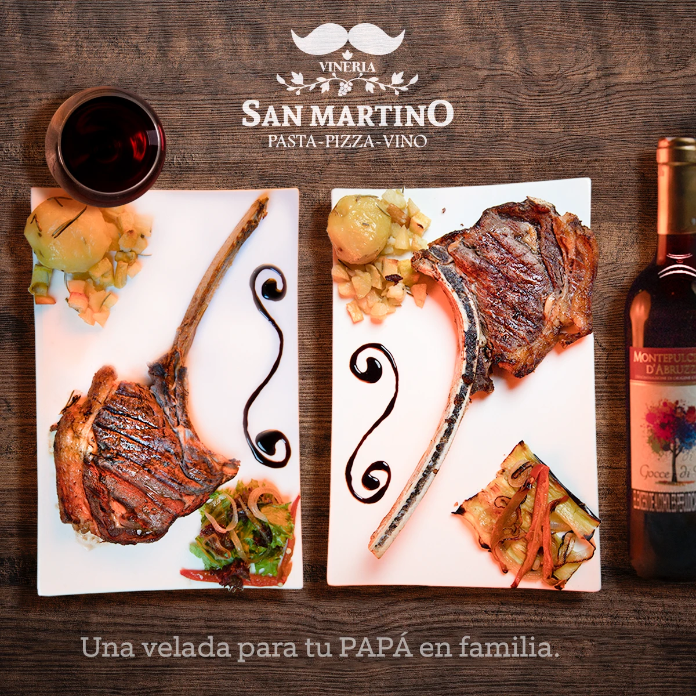
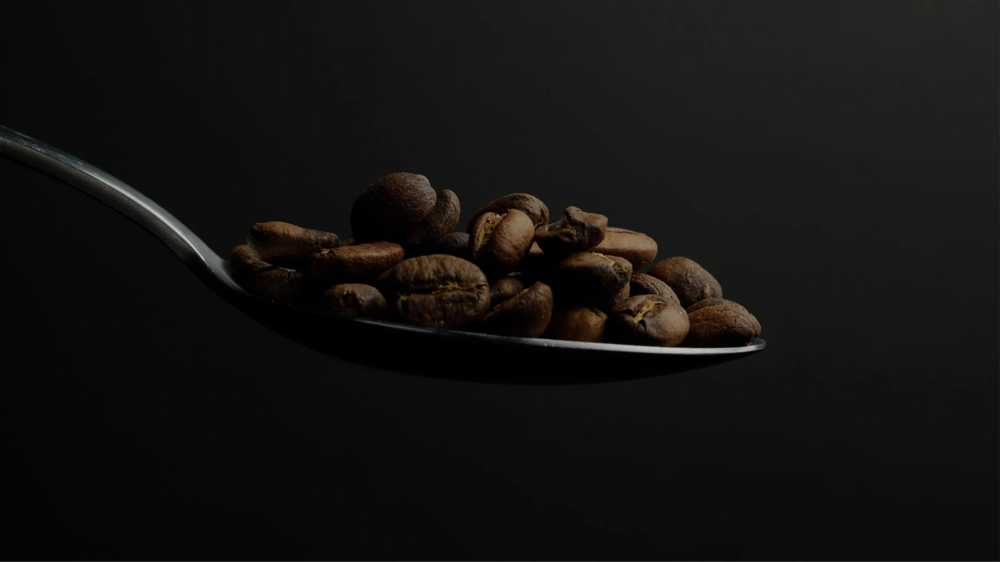
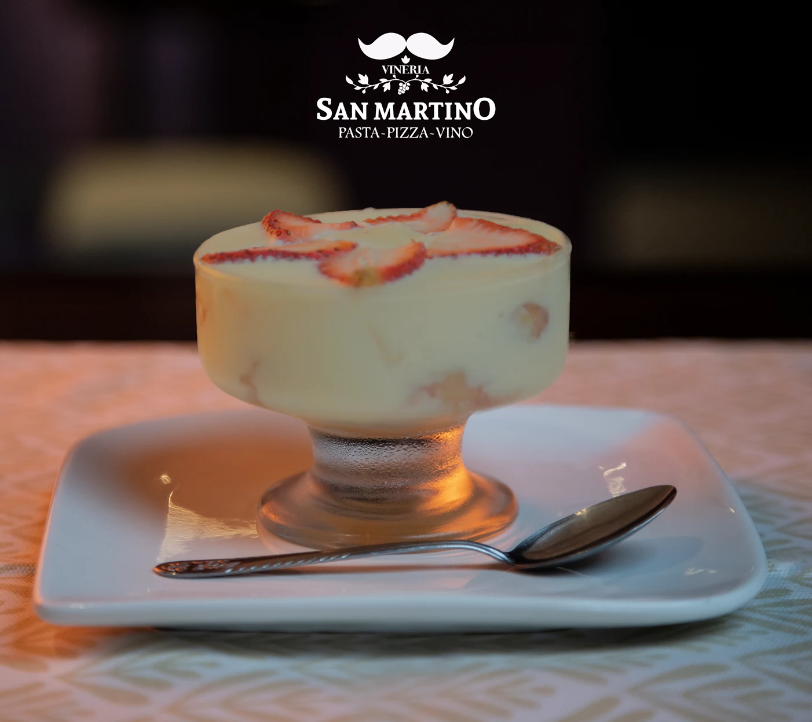

Fotografía de producto
Tomahawk Doble
Dos cortes tomahawk presentados en una pieza gastronómica de Vinería San Martino.

Combino producción audiovisual y estrategia de comunicación para mostrar tus productos y contar la historia de tu marca.

Fotografía de producto
Dos cortes tomahawk presentados en una pieza gastronómica de Vinería San Martino.

Fotografía gastronómica
Fotografía de un postre servido en copa, con las fresas y la presentación del plato en primer plano.
Fotografía de producto y gastronomía para catálogos, menús, tiendas en línea y campañas. Definimos las tomas, la iluminación y los formatos según dónde se publicarán.
Videos de producto y piezas de marca para redes y campañas. Puedes contratar la producción desde el guion hasta el rodaje, la edición y la entrega en los formatos que necesites.
Consultoría para definir a quién quieres llegar, qué mensajes comunicar y en qué canales publicarlos. Esas decisiones orientan el plan de contenidos y la producción.
Soy Carlos Díaz Gama, consultor en comunicación publicitaria. Trabajo en producción audiovisual y también enseño marketing. Esa experiencia me ayuda a conectar lo que una marca quiere decir con las imágenes y los formatos que necesita para comunicarlo.
Cuando empiezo un proyecto, busco entender qué quieres mostrar, a quién quieres llegar y dónde se verá la pieza. Con eso definimos juntos qué producir.
Escríbeme por Instagram y cuéntame qué producto o marca quieres mostrar y qué piezas tienes en mente.
Escríbeme por Instagram